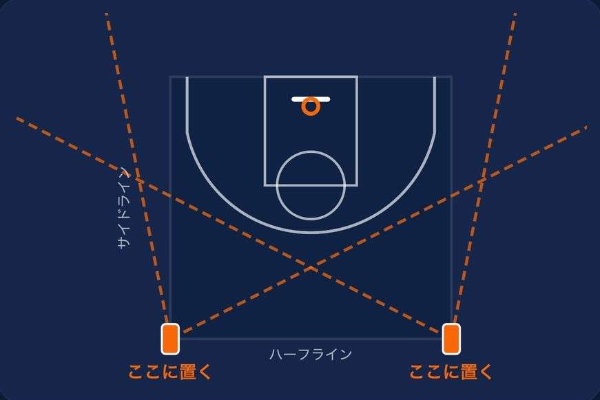
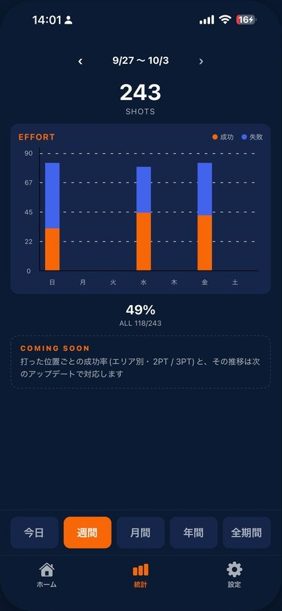
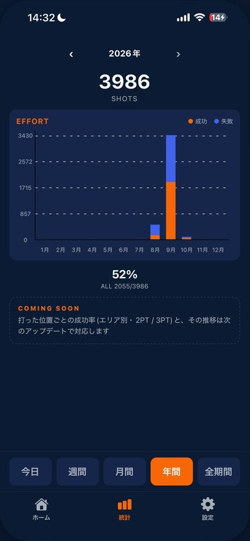
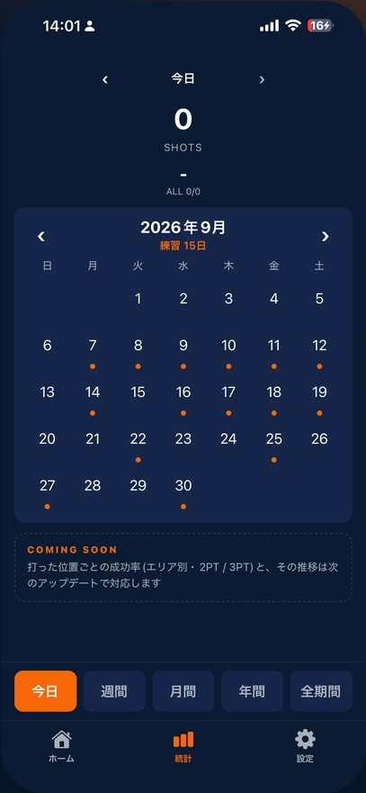

置くだけで、
数えてくれる。
スマホをコートの横に置いて「開始」を押すだけ。打った本数と入った本数を、アプリが自動で数えます。頭の中で数えながら打つのは、もう終わり。
App Storeでダウンロード iPhone専用(iPadには対応していません)
置く。合わせる。打つ。
置き方で迷わないように、アプリが手伝います。
コートの横にスマホを立てる
サイドラインとハーフラインが交わるあたりに、三脚で。高さは腰から胸くらい(90〜150cm)が目安です。
白い枠にリングを合わせる
リングが枠に3秒おさまると「開始」が押せるようになります。近すぎても遠すぎても押せないので、「たぶん大丈夫」で撮り始めることがありません。
あとは打つだけ
試投と成功が画面に増えていきます。数えるのはアプリの仕事。あなたは打つことに集中できます。

画面を見なくても、
耳で本数がわかる。
1本打つごとに本数を読み上げます。10本ごとには、入った本数も。読み上げの声とシュートが入ったときの効果音は、設定で選べます。
映像は、この端末から出ません。
シュートを見分けるAIは、あなたのiPhoneの中だけで動いています。体育館で他の人が写り込んでも気にせず使えて、電波が届かない場所でも動きます。
録画しない
カメラの映像は保存しません。
送信しない
映像をどこかへ送ることはありません。
端末の中で判定
映像から取り出すのは、ボールとリングの位置の数字だけです。
アプリの改善のため、起動した回数や端末の種類といった利用状況だけは解析サービスへ送っています。氏名・メールアドレス・正確な位置情報・カメラの映像は送りません。詳しくはプライバシーポリシーをご覧ください。
練習の記録が、日ごとに残る。
数えた本数と成功率は、そのままiPhoneの中に記録されます。「今日は何本打ったっけ」が、数字の残る練習に変わります。



- 今日・週・月・年・全期間で、本数と成功率をふり返れる
- 連続で練習した日数と、これまでの累計本数も表示
- カメラを使わない日は、打った場所をタップして記録したり、本数をまとめて入れたりできる
正しく数えるための約束
決まった置き方で使うことを前提に作っています。ここから外れると、正しく数えられません。
- 撮る向き
- コートの横から。リングの真下からは、入ったか外れたかを見分けられません。
- 高さ
- 90〜150cm。床に直置きしないでください。
- 画面の中心
- 数えたいゴールを画面の真ん中に。置いたら、数え終わるまで動かさないでください。
- リング
- ネットが付いていること。リングの後ろに窓や照明が来ない向きを選んでください。
- ボール
- 同時に使うのは1つ。リバウンドを取る人が写っていても大丈夫です。
どこから打つと入るのか、まで。
打った場所ごとの成功率(エリア別・2PT / 3PT)と、その推移を見られるようにする予定です。数えるだけでなく、自分の弱いところが数字で分かるアプリにしていきます。
1本目から100万本目まで、
ぜんぶ数える。
Million Hooper は「100万本打つフーパー」。作者が100万本を目指して打ちながら、自分の練習で使って作っているアプリです。
作っているのは、
100万本を打つと決めた本人です。
作者のMOTOが、自分の練習で使いながら直しています。シュートの検証と練習の記録は、YouTubeとInstagramで発信しています。